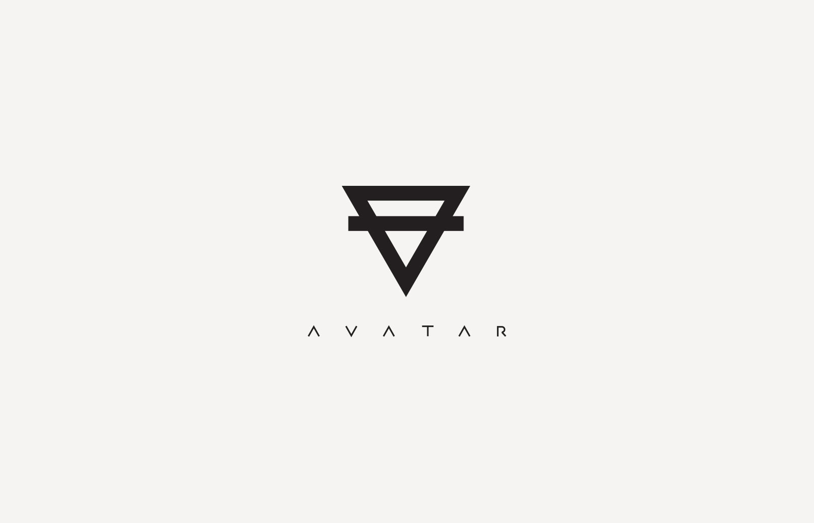
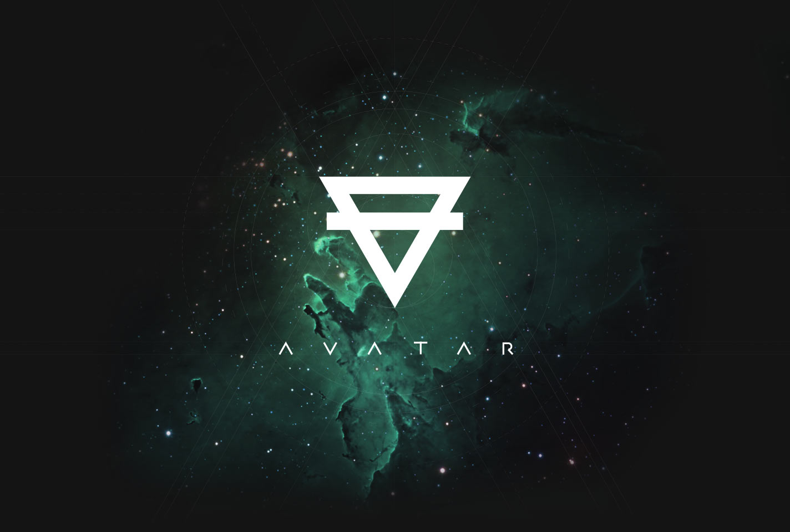
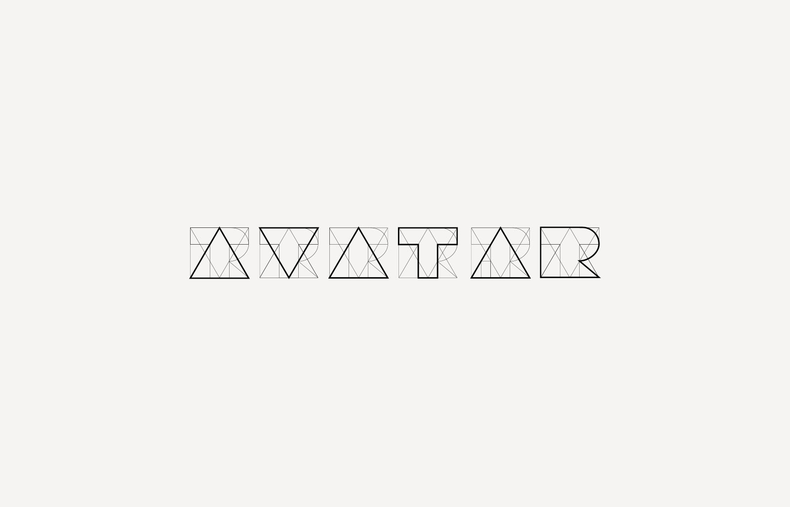

Sergey Polonsky's project Avatar—a system for broadcasting streaming video, augmented reality and more.
In the summer of 2013, as a designer and art director, together with developers from Israel and Russia, I created a system prototype design for iOS devices. The first step was to develop an internal corporate presentation and logo

At the heart of the—inverted letter A—alchemical symbol of the elements of the earth and a symbolic face

First sketches of a sign based on a specially created corporate font
